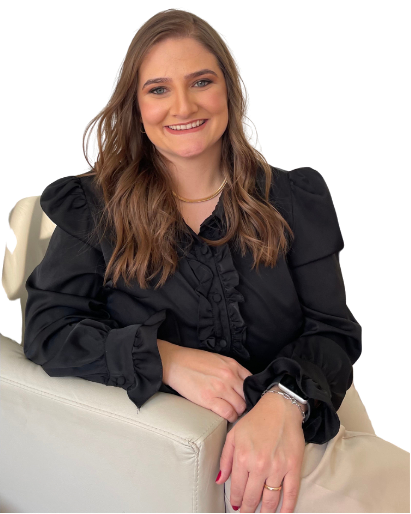

Dra. Leticia Guareschi Talassio Lheira
Fisioterapeuta infantil apaixonada pelo desenvolvimento motor das crianças, atua na área desde 2013 com formação sólida e olhar sensível para cada fase da infância. É bacharel em Fisioterapia pela UNIP (2016) e possui pós-graduação em Fisioterapia Cardiorrespiratória pela Famerp (2019).
Sua trajetória inclui experiências práticas no Hospital da Criança e Maternidade de São José do Rio Preto (2018–2019), com foco em fisioterapia respiratória e neonatal. Aperfeiçoou-se em áreas como reequilíbrio tóraco-abdominal (RTA), Busquet (incluindo o curso “Bebê em suas mãos”), e segue em formação contínua nos métodos Busquet e Padovan.
Passou por diferentes frentes clínicas e hospitalares, atuando como supervisora de equipe de fisioterapia adulto e pediátrica no Austa Hospital Care (desde 2019), com vivência em UTI neonatal e pediátrica no HCM (2019–2022), além de atendimentos domiciliares voltados à reabilitação respiratória e motora infantil.
Hoje, dedica-se exclusivamente à fisioterapia pediátrica, acompanhando bebês e crianças com atenção especial a assimetrias cranianas, torcicolo congênito e alterações tônicas e posturais — sempre com acolhimento, escuta e cuidado individualizado.
